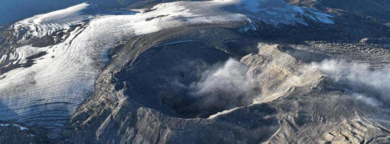

Nevado Del Ruiz

Description
Nevado del Ruiz (Spanish pronunciation: [neβaðo ðel ˈrwis]), also known as La Mesa de Herveo. (English: Mesa of Herveo, the name of the nearby town) is a volcano on the border of the departments of Caldas and Tolima in Colombia, being the highest point of both. It is located about 130 km (81 mi) west of the capital city Bogotá. It is a stratovolcano composed of many layers of lava alternating with hardened volcanic ash and other pyroclastic rocks. Volcanic activity at Nevado del Ruiz began about two million years ago, during the Early Pleistocene or Late Pliocene, with three major eruptive periods. The current volcanic cone formed during the present eruptive period, which began 150,000 years ago.
The volcano usually generates Vulcanian to Plinian eruptions, which produce swift-moving currents of hot gas and rock called pyroclastic flows. These eruptions often cause massive lahars (mud and debris flows), which pose a threat to human life and the environment. The impact of such an eruption is increased as the hot gas and lava melt the mountain's snowcap, adding large quantities of water to the flow. On November 13, 1985, a small eruption produced an enormous lahar that buried and destroyed the town of Armero in Tolima, causing an estimated 25,000 deaths. This event later became known as the Armero tragedy—the deadliest lahar in recorded history. Similar but less deadly incidents occurred in 1595 and 1845, consisting of a small explosive eruption followed by a large lahar.
Eruptive History
The first eruptions of Nevado del Ruiz occurred about 1.8 million years ago at the beginning of the Pleistocene epoch. Three primary eruption periods in the history of the massif have been identified: ancestral, older and present. During the ancestral period between one million to two million years ago, a complex of large stratovolcanoes was created. Between 1.0 million and 0.8 million years ago, they partially collapsed, forming large (5–10 km wide) calderas. During the older period, which lasted from 0.8 million to 0.2 million years ago, a new complex of large stratovolcanoes developed (including Older Ruiz, Tolima, Quindio, and Santa Isabel). Once again explosive summit calderas formed from 0.2 million to 0.15 million years ago.